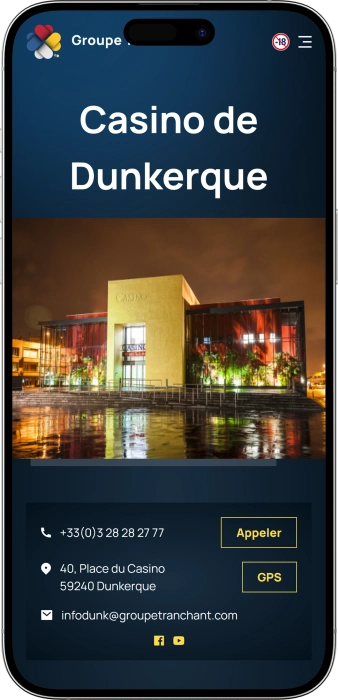

Offre de bienvenue exclusive de
Offre de bienvenue exclusive de
Casino de Dunkerque — jeux, restaurant La Cascade et soirée en bord de mer
Top casinos
Détails du bonus
Casino
Bonus
Note
Tours gratuits
Plus d'infos
Obtenir
Avantages
-
175 machines à sous, choix varié.
-
Roulette électronique: nombreux postes, rythme.
-
Blackjack électronique: parties rapides, confort.
-
Tables live: roulette, blackjack, classique.
-
Mise minimale slots dès 0,01 €.
-
Ouvert tous les jours, horaires pratiques.
-
Restaurant La Cascade: cuisine, ambiance.
- Le Casino de Dunkerque réunit jeu, confort et accès simple. L’expérience est pensée « tout-en-un » : machines, tables, restauration et détente, idéale pour une sortie spontanée comme pour une soirée planifiée.
Casino de Dunkerque App


À propos Casino de Dunkerque
Le Casino de Dunkerque se distingue par l’accent mis sur les jackpots progressifs et un parc de machines conséquent. Ajoutez des horaires étendus : pratique pour jouer quand vous le souhaitez.
- Jackpots: jusqu’à 16 000 €+.
- Gains: souvent 100 €+.
- Slots: progressifs attractifs.
Le Casino de Dunkerque est une adresse moderne en bord de mer, idéale pour mêler détente et frissons du jeu. On y vient pour une ambiance conviviale et une sortie facile à organiser. Les espaces de jeu alternent formats électroniques dynamiques et grands classiques aux tables. Les débutants y trouvent un cadre simple pour découvrir l’univers du casino en douceur.
Les joueurs réguliers apprécient la variété et le confort d’une salle bien pensée. L’expérience se vit aussi bien pour une pause rapide que pour une soirée complète. Un restaurant sur place permet de prolonger le moment autour d’une cuisine soignée. Tout au long de l’année, des animations et rendez-vous thématiques renforcent l’aspect festif. Les conditions d’accès favorisent une atmosphère élégante et sereine. Le Casino de Dunkerque convient à ceux qui cherchent jeu, service et plaisir réunis.
Casino de Dunkerque : ambiance balnéaire et sensations de jeu
Le Casino de Dunkerque se vit comme une parenthèse de détente au bord de mer, où l’on vient autant pour l’ambiance que pour le jeu. À l’intérieur, l’atmosphère mélange confort moderne, éclairages chaleureux et énergie typique d’une salle de casino. L’idée est simple : proposer une sortie « tout à portée de main », entre divertissement, gastronomie et promenade sur le front de mer. C’est une formule appréciée quand on veut changer d’air sans complications.
Côté horaires, l’établissement est pensé pour s’adapter à différents rythmes. L’ouverture quotidienne facilite les visites spontanées, tandis que les soirées de fin de semaine conviennent davantage aux sorties tardives. En journée, l’ambiance est souvent plus calme et propice aux machines et aux postes électroniques, joués à son propre rythme. Plus tard, l’atmosphère devient plus animée et l’expérience prend un ton plus festif.
L’offre de jeu du Casino de Dunkerque repose sur un équilibre entre variété et accessibilité. On retrouve un espace important dédié aux machines et aux jeux électroniques, idéal pour démarrer en douceur et choisir selon ses envies. Les amateurs de tradition apprécient la présence de tables live, qui apportent interaction, règles classiques et vraie intensité. Cette combinaison permet d’alterner sessions rapides et moments plus stratégiques.
La restauration fait partie intégrante de l’expérience. Le restaurant La Cascade, avec son décor tropical, transforme facilement une simple visite en vraie soirée. Faire une pause entre deux sessions, prolonger le plaisir autour d’un repas, ou fêter un bon moment renforce le côté « sortie complète ». Le lieu convient aussi bien aux couples qu’aux groupes ou aux visiteurs solo en quête de confort.
Pour l’hébergement, on s’oriente généralement vers les hôtels situés à proximité, pratique pour un week-end ou une soirée tardive. Le casino devient alors le cœur de la soirée, autour duquel il est facile d’organiser son programme. Des animations et rendez-vous thématiques viennent compléter l’offre en apportant une touche événementielle. Les avantages et mécanismes de récompense sont souvent liés à la fréquence de visite et à l’activité de jeu, ce qui incite naturellement à revenir.
Service au Casino de Dunkerque : équipe, paiements et retrait des gains
Au Casino de Dunkerque, le personnel est généralement formé pour accueillir, orienter et expliquer les bases : fonctionnement des machines, règles des tables, accès aux espaces. Le français reste la langue principale, et l’anglais est souvent utilisé pour aider les visiteurs, surtout en soirée et lors des périodes d’affluence. Les étapes clés — contrôle d’identité, entrée, opérations de caisse — suivent des procédures claires, ce qui rassure les nouveaux joueurs. L’objectif est de garantir une expérience fluide et un cadre serein.
La monnaie de référence est l’euro et la logique de paiement est conçue pour être simple. En pratique, vous pouvez régler en espèces ou par carte bancaire, et la restauration accepte généralement les moyens de paiement courants. Beaucoup de joueurs prévoient un budget précis : une part pour le jeu, une part pour la pause au restaurant. Cette organisation rend la soirée plus confortable et limite les décisions impulsives.
La question des distributeurs et du change dépend de l’environnement immédiat. Certains casinos disposent d’un DAB sur place ou à proximité, mais il est préférable de ne pas compter uniquement dessus et d’anticiper. Le change est souvent plus avantageux en ville via les réseaux bancaires, car il peut être limité dans l’enceinte du casino. Pour les opérations importantes, une pièce d’identité est demandée, et des contrôles complémentaires peuvent exister pour respecter les obligations réglementaires.
Le retrait des gains se fait généralement à la caisse. Sur les machines, un ticket ou un enregistrement du gain permet de récupérer la somme selon les procédures internes, le plus souvent en espèces. Aux tables, les gains se matérialisent en jetons, ensuite convertis à la caisse avec contrôle d’identité. Pour des montants élevés, une organisation spécifique peut être proposée (sécurité, traçabilité, conformité).
La fiscalité est une interrogation fréquente. Dans la plupart des situations courantes, les gains de casino ne nécessitent pas de démarche immédiate du joueur comme un « salaire », mais les règles peuvent varier selon votre statut et votre résidence fiscale. Pour un gain important, conservez les justificatifs de paiement et informez-vous en amont si vous devez déclarer quelque chose dans votre pays. Cette prudence vous apporte une vraie tranquillité d’esprit.
Règles du Casino de Dunkerque : accès, tenue et itinéraire
La visite du Casino de Dunkerque commence par des règles simples qui garantissent une ambiance sereine et sécurisée. L’accès aux salles de jeux est réservé aux majeurs et une pièce d’identité valide est indispensable. La tenue demandée reste soignée : les vêtements de sport et de plage sont généralement refusés. Un contrôle peut être renouvelé aux heures d’affluence, il est donc préférable de garder ses papiers à portée de main. La photo et la vidéo peuvent être limitées dans les zones de jeu pour préserver la confidentialité. En cas d’ivresse marquée ou de trouble, l’accès peut être refusé ou interrompu. Le respect des autres joueurs et du personnel fait partie de l’expérience. Pour un premier passage, prévoyez un petit temps d’orientation : caisse, machines, tables, restaurant. En voiture, anticipez le stationnement, surtout le week-end. Sans véhicule, taxi et transports urbains restent les options les plus simples. En résumé, ces règles visent à protéger le confort de tous.
- • Tenue exigée : style soigné et casual; vêtements de sport/plage interdits; chaussures fermées recommandées; apparence correcte.
- • Conditions d’entrée : 18+; pièce d’identité valide; respect du règlement intérieur; contrôle sécurité possible.
- • Interdictions : mineurs; comportements agressifs; prises de vue intrusives; objets dangereux; non‑respect des consignes; triche ou perturbation du jeu.
- • Parking / accès : arrivée facile en voiture vers la zone du front de mer; venir plus tôt en soirée; alternatives — taxi, marche depuis le centre, transports en commun.
Programme de fidélité du Casino de Dunkerque : statuts, points et privilèges
Un programme de fidélité en casino terrestre vise à transformer la régularité en avantages concrets. Au Casino de Dunkerque, la logique passe généralement par une carte joueur qui enregistre l’activité, surtout sur les machines, et parfois aux tables selon les modalités. L’intérêt principal réside dans les offres personnalisées, crédits de jeu, invitations et un service plus confortable. Plus vous venez, plus le statut progresse et plus les avantages s’élargissent. Pour un nouveau visiteur, un statut d’entrée rend l’expérience plus accessible grâce à des offres de bienvenue. Pour les habitués, la valeur se trouve dans l’accumulation accélérée et les compensations sous forme de crédits ou d’avantages restauration. Les cadeaux d’anniversaire et opérations saisonnières renforcent l’envie de revenir. Pour les profils VIP, les invitations et attentions deviennent plus exclusives.
Conditions d’inscription :
- • 18+ et pièce d’identité : création du compte joueur avec justificatif valide.
- • Formulaire client : coordonnées pour recevoir offres et invitations.
- • Acceptation du règlement : respect des règles et du jeu responsable.
- • Activation immédiate : carte utilisable dès la remise.
Niveaux et obtention
- • Classic — statut de base; 1 point par 10 € d’activité machines
- • Silver — dès 1 000 points/trimestre : +10% de points
- • Gold — dès 3 000 points/trimestre : +25%, invitations
- • Platinum/VIP — dès 7 000 points/trimestre : offres premium
Bonus et avantages
- • Bonus de bienvenue : 10 € en crédits machines
- • Cashback en points : valeur 0,5–1,5% d’activité
- • Anniversaire : cadeau 20–50 € (crédits/bon)
- • Avantages restaurant : bons 10–30 € / attentions
- • Journées points x2 : calendrier promotionnel, souvent en semaine
- • Invitations shows/événements : billets ou priorité Gold/VIP
- • Service prioritaire : accueil dédié selon statut
Fournisseurs de logiciels
Divertissement et jeux au Casino de Dunkerque
Bonus et offres spéciales du Casino de Dunkerque : promos, gains et temps forts saisonniers
En dehors du programme de fidélité, les casinos terrestres misent sur des offres « événementielles » qui donnent envie de venir au bon moment. Au Casino de Dunkerque, cela se traduit généralement par des tournois machines, tirages au sort, soirées à thème et formules « dîner + jeu ». Le principe est simple : vous jouez comme d’habitude, tout en bénéficiant d’une offre temporaire ou d’une participation à un concours. Les jackpots progressifs attirent beaucoup car ils peuvent grimper et créer un vrai effet « opportunité du jour ». Les périodes festives et longs week‑ends sont aussi propices aux animations et menus spéciaux. Pour le visiteur, c’est une valeur ajoutée : plus d’ambiance, plus de chances de repartir avec un extra. Les montants évoluent selon le calendrier; les chiffres ci‑dessous sont donc des exemples indicatifs fréquents en casino terrestre. Choisir une date avec tournoi ou soirée augmente souvent l’intérêt de la visite. Voici les formats les plus courants, présentés de façon détaillée.
- • Tournois machines : dotation 1 000–5 000 €; classement par points; souvent en soirée/week‑end.
- • Tirages au sort en salle : lots 50–500 €; participation via coupons liés à l’activité.
- • Happy Hours / Crédits extra : 5–20 € de crédits selon conditions; plutôt en semaine.
- • Formule « Dîner + Jeu » : repas à La Cascade + crédits 10–30 €; idéal couples/groupes.
- • Journées Jackpots : focus sur progressifs; gains possibles 10 000 €+ selon machines.
- • Soirées thématiques : rétro, latino, lounge; parfois boisson d’accueil ou remise 10–15%.
- • Temps forts saisonniers : fêtes, Saint‑Valentin, été; lots 100–1 000 € + menus spéciaux.
- • Initiations aux jeux : découverte roulette/blackjack; gratuit ou 0–10 € .
Jeux populaires au Casino de Dunkerque : machines, roulette et blackjack
Le Casino de Dunkerque est apprécié car chacun peut choisir son rythme : machines détendues, postes électroniques rapides, ou tables live plus intenses. Les machines à sous restent le cœur de l’expérience, avec des thèmes variés et une prise en main simple. Pour ceux qui aiment la vitesse et la clarté, la roulette et le blackjack électroniques offrent un jeu fluide, avec peu d’attente. Les amateurs de tradition préfèrent les tables live : interaction, ambiance, sensation « casino authentique ». Beaucoup alternent : machines, roulette, pause au restaurant, puis retour au jeu. Cette façon de faire rend la soirée plus équilibrée et plus agréable. Les débutants se sentent souvent plus à l’aise sur l’électronique, car les règles se comprennent vite. Les joueurs réguliers recherchent la dimension stratégique des tables. Les jackpots progressifs sur certaines machines ajoutent un attrait supplémentaire. Voici un panorama des jeux les plus choisis.
- • Machines à sous : thèmes variés, bonus, jackpots progressifs selon séries.
- • Roulette électronique : mises rapides, nombreux postes, idéale en sessions courtes.
- • Blackjack électronique : rythme élevé, règles classiques, bon pour progresser.
- • Roulette Anglaise (tables live) : classique avec croupier, ambiance authentique.
- • Blackjack (tables live) : décisions et gestion du risque, très populaire.
- • Poker (selon planning) : tournois/cash, plutôt le soir et le week‑end.
Mises au Casino de Dunkerque : minimums et maximums par jeu
Les mises sont un critère central, et le Casino de Dunkerque permet généralement de débuter avec de petits montants avant de monter en gamme. Les machines offrent un accès très souple, idéal pour découvrir sans pression. Aux tables, les limites varient selon le jeu, le soir, l’affluence et la table ouverte, donc le plafond exact se confirme sur place. Le tableau ci‑dessous sert d’outil de préparation : il présente les minimums et des maximums typiques pour planifier votre budget.
| Jeu | Mise min | Mise max |
|---|---|---|
| Machines à sous | 0,01 € | 2–10 € |
| Roulette électronique | 0,20–0,50 € | 10–20 € |
| Blackjack électronique | 0,50–1 € | 10–25 € |
| Roulette Anglaise (live) | 2 € | 100–200 € |
| Blackjack (live) | 2 € | 100–200 € |
| Boule (si disponible) | 1 € | 40–100 € |
| Poker cash (si proposé) | buy‑in 100–200 € | — |
Shows, soirées et animations au Casino de Dunkerque
Le Casino de Dunkerque ne se limite pas au jeu : c’est aussi une destination de sortie avec un vrai calendrier d’animations. Tout au long de l’année, l’établissement mise souvent sur des soirées thématiques, des rendez‑vous musicaux, des dîners spéciaux et des formats qui donnent un esprit festif. Le week‑end, la dynamique est généralement plus forte : on vient pour une soirée complète, entre jeu, pause au bar, musique et retour aux machines ou aux tables. Dans ces moments, le casino devient un point de rencontre « nuit et divertissement », tout en restant confortable.
Une partie des animations est directement liée au jeu : tournois machines, tirages au sort, soirées promotionnelles orientées sur certains jeux et, selon le planning, des événements poker. C’est idéal si vous aimez jouer avec un objectif précis et une dimension événementielle. Pour les nouveaux visiteurs, des initiations ou explications peuvent faciliter la découverte des règles et de la logique des mises. Cela rend l’expérience plus accessible et plus agréable dès la première visite.
Le volet nocturne est souvent soutenu par une ambiance musicale : DJ sets, musique live ou atmosphère lounge, selon la date. L’idée est de créer une soirée où l’on peut aussi discuter, se détendre et prolonger le plaisir. Pour les groupes, la formule « jeu + dîner + animation » est particulièrement appréciée car tout se déroule au même endroit. Pendant les périodes festives, les scénarios deviennent plus marqués, avec des soirées spéciales et un accent sur l’expérience globale.
Toutes les animations
- • Concerts / artistes locaux — musique du soir, ambiance et détente.
- • Soirées DJ — énergie week‑end, sorties tardives.
- • Soirées à thème — rétro, lounge, périodes saisonnières.
- • Petits shows / humour — compléments divertissants à la soirée.
- • Tournois machines — compétition avec dotations selon périodes.
- • Tirages au sort — animations rapides et accessibles en salle.
- • Événements poker (selon planning) — tournois/cash pour passionnés.
- • Initiations aux jeux — découverte des règles et des mises.
Restaurants, bars et détente au Casino de Dunkerque : organiser sa soirée
Au Casino de Dunkerque, la détente se construit facilement autour d’un concept simple : tout est réuni sur un même site pour créer une soirée complète. Le point fort côté restauration reste La Cascade, souvent associée à une ambiance tropicale et une cuisine française soignée. C’est parfait pour alterner : une session machines, un dîner, puis retour à la roulette ou au blackjack. Ce rythme rend l’expérience plus confortable et plus « sortie » que « simple jeu ».
Dans un casino, les espaces bar jouent généralement un rôle clé : faire une pause, discuter, relâcher la pression et profiter de l’ambiance. Pour beaucoup, c’est ce qui donne le ton festif de la soirée. Le soir, l’atmosphère s’intensifie grâce aux animations et à la dynamique week‑end. En format escapade, on complète souvent la visite par une promenade sur le front de mer, ce qui renforce le côté « balnéaire ».
Pour l’hébergement, la solution la plus courante consiste à choisir un hôtel à proximité. C’est pratique si vous restez tard ou si vous prévoyez plusieurs soirées. L’idéal est de privilégier un emplacement simple pour revenir sans stress. Au final, le Casino de Dunkerque fonctionne très bien comme « centre de soirée » : dîner, jeu, détente, puis fin de nuit au calme.
Tous les espaces détente
- • La Cascade (restaurant) — cuisine française, décor tropical, pause idéale entre sessions.
- • Espaces bar du casino — boissons, pause, échanges, changement de rythme.
- • Salles de jeux — détente selon humeur : machines/électronique/tables live.
- • Front de mer à proximité — promenade avant/après la visite.
- • Hôtels proches — solution pratique pour une fin de soirée tardive.
FAQ
Dans beaucoup de casinos terrestres, l’entrée est gratuite, mais certaines dates/événements peuvent avoir des conditions particulières. Le plus simple est de vérifier le jour même.
Contactez immédiatement le personnel ou la caisse. Plus vous agissez vite, plus la vérification système est simple.
Un contrôle sécurité peut être appliqué. Évitez les bagages volumineux pour un accès plus fluide.
Le casino propose habituellement des informations et outils de jeu responsable : limites, auto‑exclusion, orientation vers des services d’aide. C’est utile pour maîtriser budget et temps.